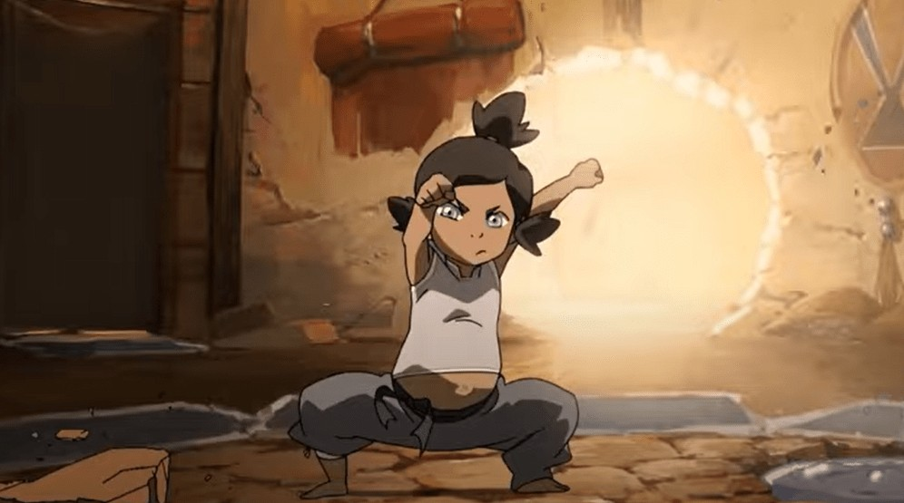
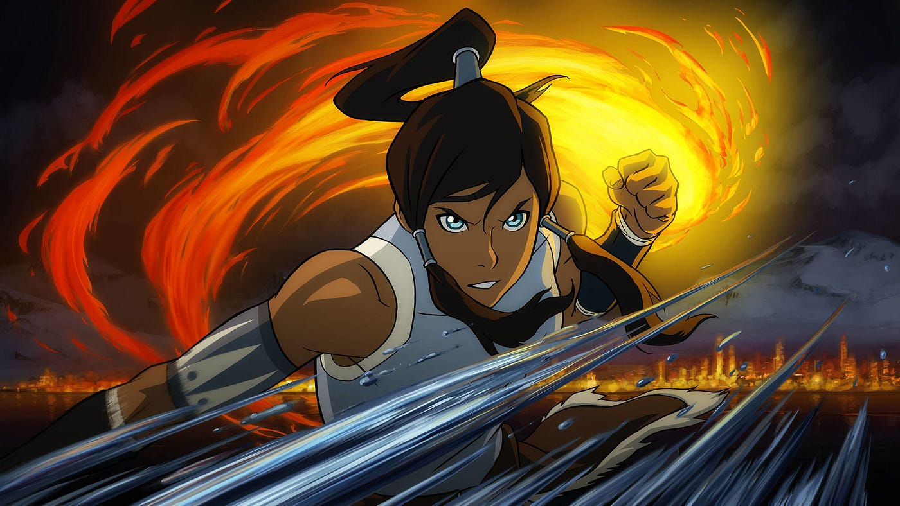
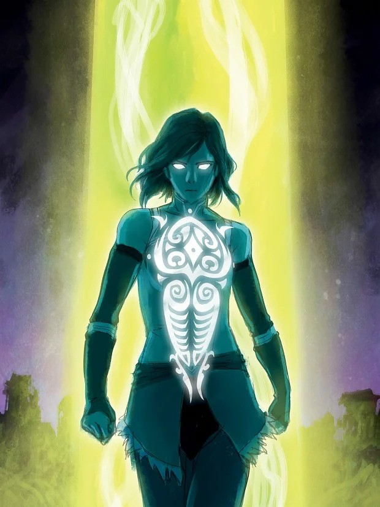

Gyermekkora

AKorra, az Avatar ciklus új reinkarnációja, a Déli Víz Törzsben született. Már gyerekként kitűnt különleges tehetsége, hiszen rendkívül fiatalon képes volt a víz, föld és tűz idomítására, ami megerősítette, hogy ő az Avatar. Természeténél fogva erőteljes, határozott és impulzív volt, ami már kiskorától különbözött elődjétől, Aangtól.
Gyermekkora nagy részét a Fehér Lótusz Rend felügyelete alatt töltötte, egy elszigetelt kiképzőközpontban, ahol mesterei az idomítási képességei fejlesztésére összpontosítottak. Bár kiválóan haladt a fizikai elemek elsajátításában, a spirituális oldallal, különösen a légidomítással és a meditációval, nehezen boldogult. Ez türelmetlenségéből és a Levegő Nomádok békés filozófiájától való távolságából fakadt.
Az elszigeteltség miatt Korra kevés tapasztalatot szerzett a külvilágról, ami később kihívásokat jelentett számára Avatar szerepében. Gyermekkori neveltetése és természete miatt erős, céltudatos vezetővé vált, de spirituális egyensúlyának megtalálása csak későbbi tapasztalatai során fejlődött ki. Ez a kettősség alapvetően meghatározta az ő útját és tanulási folyamatát Avatarként.
Legfontosabb tettei

Korra legfontosabb cselekedetei a világ átalakításában játszottak központi szerepet. Az egyik legjelentősebb tette az Éteri Konvergencia során történt, amikor legyőzte Unalaqot és Vaatut, a sötétség szellemét, megakadályozva a világ elpusztítását. Ezzel egy időben úgy döntött, hogy nyitva hagyja a szellemek világának kapuit, ezzel közelebb hozva a spirituális és fizikai világot egymáshoz.
Korra emellett legyőzte Zaheer-t, a Vörös Lótusz vezetőjét, aki az anarchia elterjesztésére törekedett és az Avatar elpusztítását tervezte. Bár a csata során súlyosan megsérült, Korra eltökéltsége megakadályozta Zaheer tervét, és ezzel megvédte a világot az összeomlástól. Ez a küzdelem jelentős személyes áldozatot követelt tőle, és hosszú ideig tartott, mire fizikailag és mentálisan is felépült.
Korra továbbá legyőzte Kuvirát, aki megpróbálta uralma alá hajtani a Föld Királyságot, és az Avatar szerepét új alapokra helyezte, amelyben nemcsak védelmezőként, hanem béketeremtőként és közvetítőként is fellépett. Képességeit és döntéseit nemcsak a világ fizikai védelmére, hanem a társadalmi és spirituális harmónia megteremtésére is használta, új korszakot nyitva az Avatar szerepében.
Az Avatar szerep

Korra az Avatar szerepét egy modernebb, nyitottabb irányba terelte, miközben továbbra is a világ egyensúlyának fenntartásán dolgozott. Miután legyőzte Kuvirát, aktívan részt vett a Föld Királyság újjászervezésében és az új politikai rendszer, az Egyesült Föld Birodalom megalapításában. Ez az új rendszer a decentralizált hatalmat és a nép képviseletét hangsúlyozta, így segítve a tartós stabilitást.
Korra ezen felül folytatta a szellemek világával való kapcsolat elmélyítését. A szellemkapuk megnyitása után közvetítőként működött az emberek és a szellemek között, segítve őket, hogy békében éljenek egymás mellett. Munkássága során hangsúlyozta a spirituális és fizikai világ közötti harmóniát, miközben bátorította az embereket, hogy maguk is felelősséget vállaljanak a világ jólétéért.
A személyes életében is fejlődött: mélyebb kapcsolatot alakított ki Asamival, akivel közösen támogatták egymást a kihívások során. Kapcsolatuk új fejezetet nyitott Korra életében, megmutatva, hogy az Avatar is ember, akinek szüksége van társakra és támogatásra. Korra ezekkel a lépésekkel nemcsak a világ fizikai védelmezője maradt, hanem a béke és megértés szimbólumává vált a modern világban.